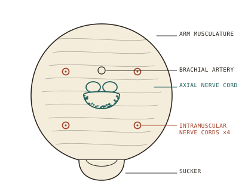
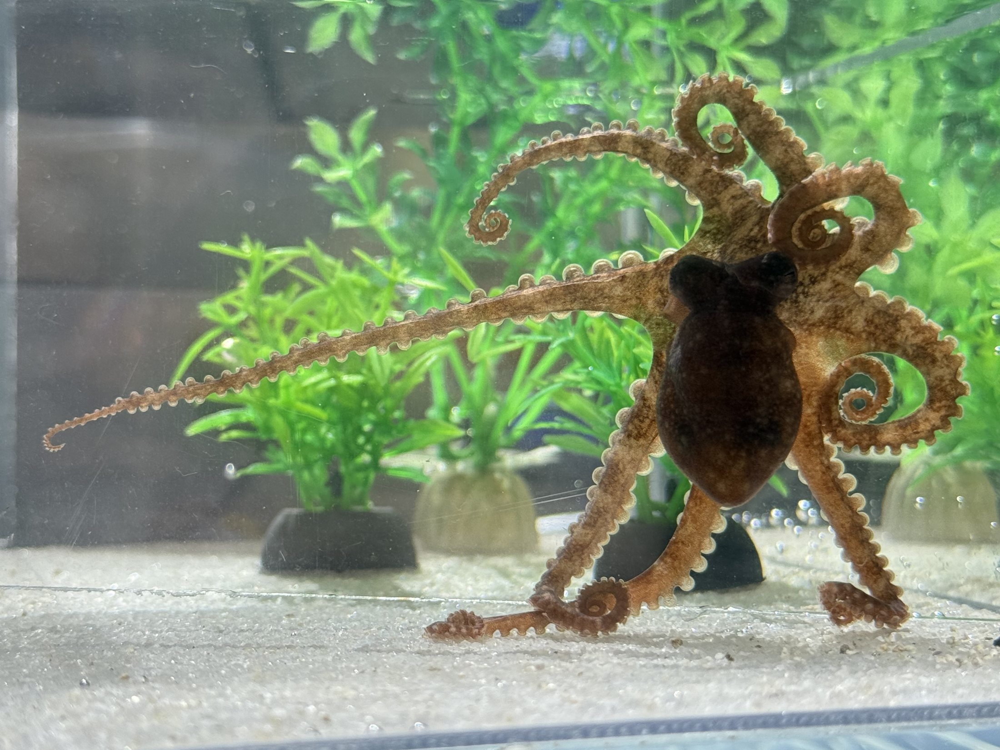
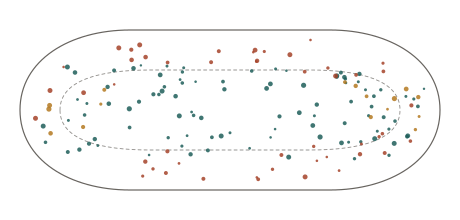
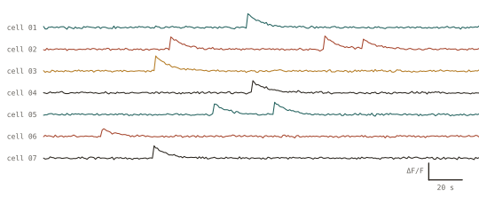

Research
How do some neuronal circuits stay resilient when pushed outside their normal physiological range, while others fail? I ask that question in the nervous system that poses it most sharply: the distributed, semi-autonomous circuitry of the cephalopod arm.
The question
Cephalopods have the largest and most complex nervous systems of any invertebrate, spread across a central brain and semi-autonomous arm nerve cords, and they live in coastal water where temperature and carbon dioxide swing daily. They are predicted to be among the animals most vulnerable to ocean acidification, because their blood pigment loses its grip on oxygen as pH falls. Yet Octopus bimaculoides persists in the intertidal, where both stressors swing on every tide.
Is a distributed nervous system a liability under stress, with more far-flung parts to protect, or an asset, with parallel pathways that keep the system running as components falter? My central hypothesis is that greater cellular and molecular complexity strengthens neural resilience by providing flexible, overlapping, and redundant pathways, and that the cephalopod nervous system's distributed organization is a structural version of the same principle. Failure, if it comes, should begin where redundancy is thinnest.
My own recent data already point this way. In the octopus arm nerve cord, glutamate and dopamine drive population activity through parallel, partly overlapping pathways with a large shared pool of responders, and serotonin sets the operating regime. That is the tissue this program stresses.
Why the octopus arm

An octopus has roughly five hundred million neurons, and about two-thirds of them are in the arms. An arm disconnected from the brain will still produce a coordinated extension. The periphery is not a relay; it is a computer of its own, and its capacity to buffer environmental stress is unknown.
It is also an unusually good place to work. The axial nerve cord generates motor programs without the brain, so peripheral circuits can be challenged in isolation and within the intact axis. I can evoke and dissect its activity pharmacologically, image hundreds of neurons at once in a slice, and then process the same tissue for multiplex in situ hybridization so that the cells that kept working, or failed, can be matched to molecular identities.
Every species I work with is a mollusc, so the program needs seawater and invertebrate space rather than a vertebrate facility.

What I have built so far
A three-dimensional molecular atlas of the arm nerve cord
Using multiplex hybridization chain reaction across the axial nerve cord of O. bocki, we mapped where the transcripts for classical transmitters, neuropeptides, and their receptors sit in three dimensions. The cord turned out to be far more spatially and neurochemically complex than the textbook picture of a ganglion chain: distinct populations occupy distinct territories, and the same sucker ganglion contains several transmitter systems side by side. Current Biology, 2024.

Neurochemical control of a decentralized circuit
With the map in hand, I established calcium imaging in living slices of the nerve cord and asked what each transmitter actually does to the population. Glutamate and dopamine were the dominant excitatory drivers, activating large and overlapping populations. Serotonin was weakly excitatory on its own but halved the recruitment evoked by glutamate or dopamine applied after it. Acetylcholine suppressed activity broadly. And responsive neurons were spatially intermingled, with no segregation by response profile. This links neurochemical architecture to real-time population dynamics in the arm for the first time. iScience, accepted 2026.

The intramuscular nerve cords
Four smaller nerve cords run through the arm muscle around the axial cord, and almost nothing was known about them. With three of my students as co-authors, we characterized their molecular identity and ultrastructure, combining HCR with electron microscopy. Preprint 2026; under review at the Journal of Comparative Neurology.
Molecular mapping of the octopus brain
My doctoral work with Leonid Moroz used single-cell sequencing, in situ hybridization, and immunohistochemistry to map molecular diversity in molluscan memory centers, revealing unexpected neuropeptide diversity in the octopus brain and contributing transcriptomic evidence that complex cephalopod brains evolved in parallel. It laid the groundwork for everything above. Journal of Morphology, 2020 and 2022; Integrative and Comparative Biology, 2015.
The program: resilience in a distributed nervous system
I use two environmentally relevant stressors, chosen because they act differently. Elevated CO₂ works through a specific, traceable route: acid-base compensation shifts intracellular chloride and the reversal potential of ligand-gated anion channels until inhibition weakens and can invert. That route runs through the ion transporters and channels my transcriptomic work already nominates. Temperature acts on many targets at once, on channel gating, pump capacity, membrane fluidity, and protein stability, which suits dose-response designs and mirrors the thermal swings every species in the panel actually meets. Because warming raises metabolic CO₂ while acidification proceeds independently, I apply the two crossed as well as separately.
Octopus bimaculoides
Temperate eastern Pacific, intertidal and eurythermal, with a sequenced genome and deep molecular resources. Roughly 500 million neurons, two-thirds in the arms.
Octopus bocki
Tropical Indo-Pacific relative: same body plan, same distributed architecture, a buffered thermal and pCO₂ history. My atlas and imaging preparation live here.
Euprymna berryi
The hummingbird bobtail squid: accessible embryos, a lifecycle closed in the lab, CRISPR protocols and an albino line for in vivo imaging, and a single-cell nervous-system atlas to reference.
Map the stress-responsive circuits
How do neuronal cell types across the three species respond to thermal and hypercapnic stress, at transcriptomic and spatial scales? I dissect arm nerve cords, stellate ganglia, and brain lobes from control and challenged animals, sequence them, and localize the candidate transporters, channels, and modulatory systems to the cell types that carry them with multiplex HCR. Because central and peripheral tissue come from the same animals, this aim also asks whether the periphery runs its own resilience program.
Test the mechanisms in whole animals
Are the pathways from the first aim required for resilience? In E. berryi, candidates are edited or repressed with established CRISPR methods and phenotypes are scored on uniform F1 animals; in the octopuses, somatic knockdown and pharmacology target the same pathways. The prediction is a direct test of the redundancy hypothesis: perturbing a gene embedded in a diversified network should cost less than perturbing a single-point dependency.
Watch circuits fail, and recover, in real time
Confocal calcium imaging of motor-program output in both octopuses, in the isolated periphery and the intact axis, extended to central brain and optic-lobe circuits, with edited squid imaged beside wild type. I measure evoked amplitude, latency, propagation, and coordination, then process the same tissue for HCR so failure lands on a named cell type. Recovery is scored too: does restored output reuse the original pathway, or recruit an alternative?

Diversified toolkits should degrade gradually, recruiting alternatives as components drop out. Single-point dependencies should fail abruptly. The hypothesis predicts failure's shape as well as its position.
Where students fit
I sized these aims so that undergraduates can do the science rather than assist with it. Each entry-level assay is inexpensive, repeatable, and defensible as a project on its own, and takes about the length of a summer research residency: a critical thermal maximum determination, a crossed challenge trial, the quantification of labelled cells in one imaging dataset. A student therefore holds a question of their own rather than a task list, analyzes their own data, presents it, and appears as an author.
Training is layered. New students enter through a course-embedded research experience or a paid summer position, learn husbandry and one assay, and contribute to a shared dataset. Experienced students take a defined sub-question, choose their own comparison, write it for authorship, and train the students behind them. Everyone, from the first week, holds a rotation in feeding, water quality, and daily health checks for the animals the whole group depends on. Husbandry is where students learn to watch an animal closely enough to notice when something changes, which is the same attention that makes a good experimentalist.
The analysis is scripted rather than clicked. Homology searches and gene trees, transcriptomic analysis, image quantification, and time-series analysis of circuit output are the lab's daily work, and each is a student-scale piece of computation attached to a real question.
Feasibility and funding
Every species in the program is a laboratory supply chain: E. berryi is cultured on a closed lifecycle, both octopuses are available through the Marine Biological Laboratory or commercial suppliers, and all three can be kept in simple recirculating aquaria. Tissue for the first aim is banked at collection, so sequencing is never gated on animal availability. No vertebrate facility is required.
The funding strategy is sequenced: an NSF proposal supporting the comparative mapping and physiology first, a CAREER application integrating gene-to-circuit approaches with structured student training, and NSF's Neurobiology in Changing Ecosystems once baseline resilience signatures exist in the core species, with foundation and instrumentation mechanisms rounding out the portfolio. My current work is supported by the Allen Institute's Frontiers Group and the Kavli Foundation.
Beyond the three cephalopods, the hypothesis predicts its own outgroup: a minimal-redundancy circuit should fail abruptly, at a nameable neuron. That test, in the swim circuits of sea slugs, is described on the Horizons page.